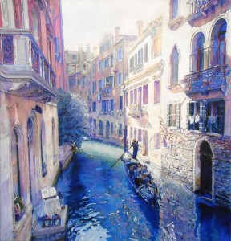

Наприкінці ХІХ століття з’явилась нова течія модернізму – імпресіонізм. Він уособлював абсолютно новий погляд на мистецтво, він був протилежністю реалізму, натуралізму та неокласицизму. У перекладі з французької impression означає враження, тобто основна задача митця не передати реальність такою, як її прийнято сприймати, а відтворити суб’єктивне бачення, створити неповторне враження, здатне надихнути спостерігача. Особлива роль відводиться миттєвому враженню, ситуації, що відбувається в просторі лише незначний час, але глибоко вражає внутрішній світ митця.
 Визначальні риси імпресіонізму:
- зображується не сам предмет, а враження від нього («Бачити, відчувати, виражати — в цьому все мистецтво», — проголошували Едмонд і Жуль Ґонкури);
- імпресіоністи орієнтуються на почуття, а не на розум;
- відмова від ідеалізації;
- часопростір ущільнюється і подрібнюється, предметом мистецької зацікавленості стає не послідовна зміна подій і явищ (фабула), не соціальний, логічно впорядкований історичний відрізок або період життя героя, а уривчасті фрагменти, відбиті у свідомості персонажа;
- герой імпресіоністичного твору цікавий не так своєю активністю, спрямованою на перетворення зовнішнього світу, як саме «пасивною» здатністю сприймати, реагувати на зовнішні збудники, бути носієм, навіть колекціонером вражень;
- найпоширенішим жанром імпресіонізму стає новела. Український імпресіонізм на тлі західноєвропейського мав яскравіше лірико-романтичне забарвлення, що зближувало його (а нерідко й змішувало зовсім) з неоромантизмом та символізмом.